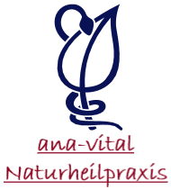
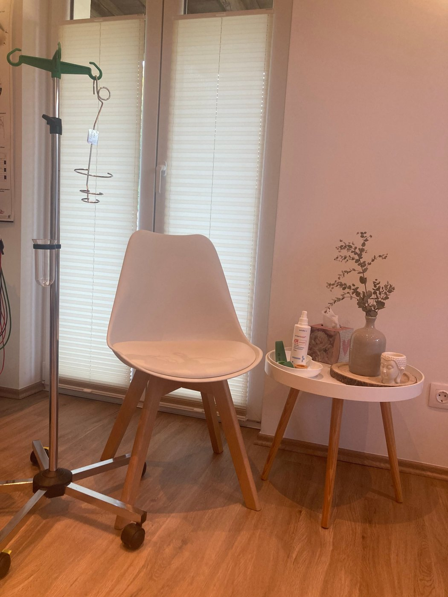

Termin vereinbarenSie möchten Ihre Gesundheit natürlich begleiten lassen? Im ausführlichen Erstgespräch erstelle ich mit Ihnen ein persönliches Konzept: mit Infusionen, Bioresonanz, Ozon- oder Blutegeltherapie.
Rufen Sie an oder schreiben Sie mir. Ich melde mich persönlich bei Ihnen.
